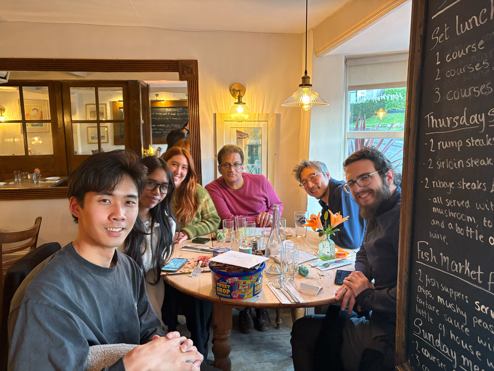
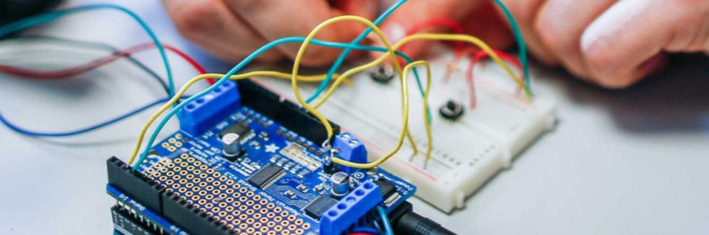

Lab News
Oct/Nov 2025
We welcomed Abby (mbio) and Mitsuki a visitor from Japan.
In Novemember, we had a nice Farewell dinner for Mitsuki at Kenilworth.

Lab retreat - July 2025
We played bowling and pool! It was a very good fun!


New members! - July 2025
Marina(PhD student) joined April 2025, and Sarb (postdoc) joined July 2025! Valentin is also spending a short (2-month) postdoc with us! The lab is getting busy!
Research
BACTERIAL ELECTROPHYSIOLOGY

Recent studies have shown
that bioelectrical signaling is universal in all forms of life -from
bacteria, plants to animal somatic cells.
While electrophysiology is a central concept in neuroscience, little is still known about bacterial electrophysiology.
We are interested in decoding bacterial electrical
signaling. Investigating these fundamental
cellular processes has potential for new bioelectrical solutions to societal challenges, such as antimicrobial resistance (AMR).
COLLECTIVE DYNAMICS

Self-organization is a universal phenomenon in biology —
for example that is how you are formed into a shape by
cells. Although bacteria are commonly thought as single-cellular organisms, it has become clear that bacterial cells can also self-organize into dynamic and structured patterns and exhibit multi-cellular properties.
Intriguingly, the self-organized communities of microbes, such as biofilms and swarms, can tolerate the levels of antibiotics that are lethal to the genetically identical cells in the isolate.
This is important in the face of rising concerns about antimicrobial resistance. We investigate the roles played by physical (e.g. mechanical and electrical) interactions
during the emergence of multicellular properties.
ENGINEERING BIOLOGY & TOOL DEVELOPMENT

We won't stop by gaining understanding.
We are committed to exploiting our understanding and our ideas to develop new technologies and
designs for monitoring and controlling bacterial functions. We make experimental tools using microcomputers and 3D printers and synthetic-biology
tools through genetic engineering. We hope to bridge the gap between electronics and biology. One company, Cytecom Ltd, has been spun out from the lab.


{kind=link}
{kind=link}
{kind=link}
{kind=link}